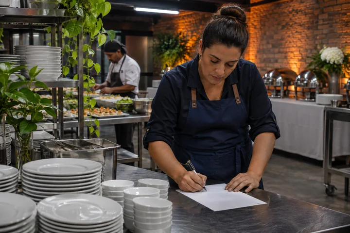

O dia da festa começa no planejamento.
Escolha o tipo de evento e diga quantas pessoas espera. O caderno muda conforme o serviço e o porte e organiza o que falta decidir.

Montar pedido
Seu resumo de evento
- Protocolo
- Ocasião
- Convidados
- Serviço
- Espaço
- Restrições alimentares
O que acontece depois.
Em um pedido real, a equipe confirma disponibilidade, visita técnica se necessária e a proposta conforme o espaço e o serviço. Esta demonstração só monta o resumo.